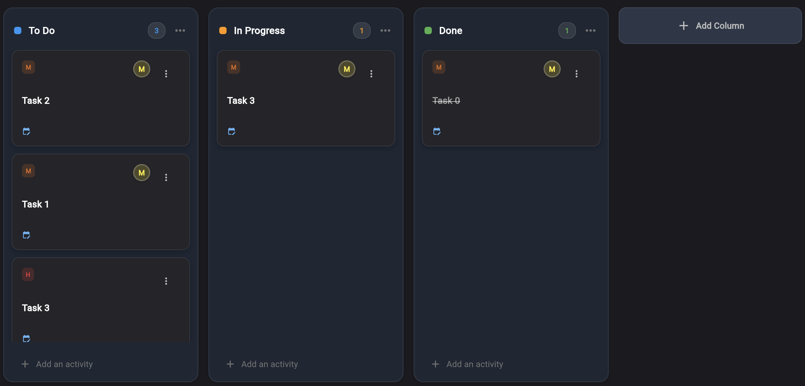
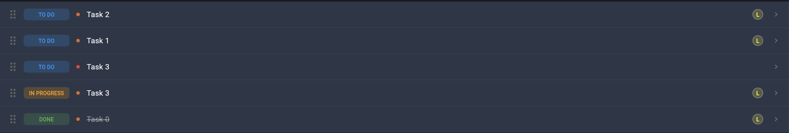
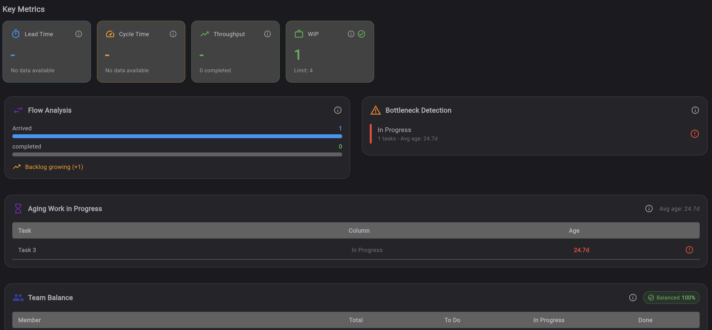
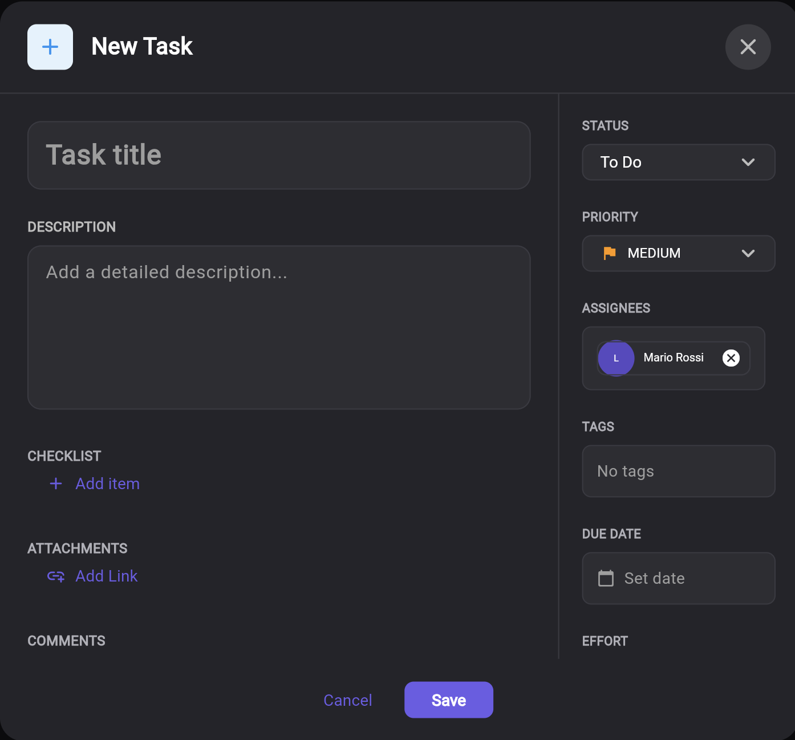

Smart Todo e Quadro Kanban
Gestao de tarefas colaborativa com colunas Kanban personalizaveis, arrastar e soltar, analiticas CFD, deteccao de gargalos, funcoes de equipe e integracoes cross-tool. Tudo o que sua equipe precisa para gerenciar o trabalho visualmente e manter-se organizada. Funciona em qualquer dispositivo.
Comece Gratis →Como Funciona
Crie uma Lista
Crie uma lista de tarefas e personalize suas colunas Kanban. Adicione cores, defina regras de ordenacao e indique quais colunas marcam as tarefas como concluidas.
Adicione Tarefas e Colabore
Adicione tarefas com prioridades, prazos, subtarefas e tags. Convide membros da equipe como Editores ou Leitores e atribua tarefas.
Monitore e Otimize
Mova tarefas entre colunas, monitore o fluxo com analiticas CFD, detecte gargalos e exporte para Eisenhower, Estimation Room ou Agile Process.
Smart Todo em Ação




Quadro Kanban Personalizavel
Colunas ilimitadas com cores individuais, opcoes de ordenacao (prioridade, prazo, criacao), arrastar e soltar e flags de conclusao flexiveis.
Vista Global
Veja todas as tarefas de cada lista com filtros inteligentes: Hoje, Minhas Tarefas (atribuidas), Proprietario (minhas listas) e pesquisa de texto completo.
Analiticas CFD
Diagramas de fluxo acumulativo com lead time, cycle time, throughput, envelhecimento WIP, deteccao de gargalos e equilibrio de carga da equipe.
Colaboracao em Equipe
3 funcoes (Owner, Editor, Viewer), atribuicao de tarefas, comentarios com imagens, anexos e trilha de auditoria completa.
Quadro Kanban, Vista Global, Calendário e Painel de Analíticas
Alterne entre 4 vistas para gerenciar as tarefas da forma que melhor funcione para sua equipe e seu fluxo de trabalho.
Quadro Kanban
Visualize seu fluxo de trabalho com colunas totalmente personalizaveis. Cada coluna tem sua propria cor, regra de ordenacao (manual, prioridade, prazo, data de criacao) e flag de conclusao opcional. Arraste e solte tarefas entre colunas, monitore o WIP em tempo real e visualize o envelhecimento das tarefas de relance. Configuracao padrao: A Fazer, Em Progresso e Concluido — pronto para usar ou totalmente personalizavel.
Vista Global
Veja todas as tarefas de cada lista em uma vista unificada. Filtre por Hoje (tarefas com prazo hoje), Minhas Tarefas (tarefas atribuidas a voce em todas as listas) ou Proprietario (listas que voce criou). A pesquisa de texto completo encontra tarefas instantaneamente em titulos e descricoes. Perfeita para gerenciar sua carga de trabalho pessoal quando participa de multiplas listas de equipe.
Vista Calendário
Visualize as tarefas em um calendário organizado por prazo. Alterne entre vistas de semana, mês e agenda. Tarefas com estimativas de esforço são exibidas como eventos com blocos de tempo (1-8 horas). Tarefas sem agendamento aparecem como itens do dia inteiro para que nada seja esquecido. Ideal para planejamento orientado a prazos e alocação de recursos.
Painel de Analiticas
Compreenda a saude do fluxo de trabalho da sua equipe com Diagramas de Fluxo Acumulativo (CFD). Monitore lead time (media, mediana, p85, p95), cycle time, throughput diario e semanal, WIP com deteccao de envelhecimento (ok / watch / aging), saude do fluxo (taxas de chegada vs conclusao), severidade de gargalos e equilibrio de carga de trabalho entre os membros.
Kit Completo de Gestao de Tarefas
- Colunas Kanban Personalizaveis — Crie colunas ilimitadas com cores individuais, opcoes de ordenacao (manual, prioridade, prazo, criacao) e flag isDone flexivel para acompanhamento de conclusao
- Gestao de Tarefas com Arrastar e Soltar — Mova tarefas entre colunas com arrastar e soltar, reordene dentro das colunas e veja as atualizacoes de posicao em tempo real
- 3 Niveis de Prioridade — Categorize tarefas como prioridade Baixa, Media ou Alta com codificacao de cores visual e ordenacao de colunas baseada em prioridade
- Subtarefas com Progresso — Divida as tarefas em subtarefas com caixas de selecao individuais, calculo automatico da porcentagem de progresso e indicador visual de progresso
- Comentarios com Imagens — Discuta as tarefas com comentarios, anexe imagens diretamente aos comentarios para contexto visual e rastreie o historico de conversas
- Anexos — Anexe links, arquivos do Google Drive ou Google Sheets a qualquer tarefa para referencia rapida e gestao documental
- Tags de Cor Personalizadas — Crie etiquetas personalizadas com cores individuais para categorizacao flexivel, filtragem e organizacao visual de tarefas
- Acompanhamento de Datas de Inicio e Prazo — Defina datas de inicio e prazos nas tarefas para visibilidade temporal, gestao de deadlines e ordenacao baseada em datas
- Esforco e Story Points — Rastreie o esforco das tarefas para estimativa de carga de trabalho, planejamento de capacidade e integracao com a Estimation Room
- Vista Global Cross-Lista — Veja todas as tarefas de cada lista em uma vista com filtros: Hoje (com prazo hoje), Minhas Tarefas (atribuidas a voce), Proprietario (suas listas), mais pesquisa de texto completo
- Vista Calendário — Visualize tarefas em um calendário de semana, mês ou agenda organizado por prazo, com blocos de tempo baseados em esforço (1-8 horas) e eventos do dia inteiro para tarefas sem agendamento
- Analiticas CFD — Diagramas de Fluxo Acumulativo mostrando lead time (media, mediana, p85, p95), cycle time, throughput (diario/semanal) e status de saude do fluxo (healthy/growing/critical)
- Monitoramento WIP e Envelhecimento — Monitore o Work In Progress com limites configuraveis, deteccao de envelhecimento de tarefas (ok abaixo de 2 dias, watch 2-5 dias, aging acima de 5 dias) e detalhamento WIP por coluna
- Deteccao de Gargalos — Identificacao automatica de colunas onde as tarefas se acumulam com niveis de severidade (baixo, medio, alto) e analise de idade media
- Equilibrio de Carga da Equipe — Analise a distribuicao de tarefas entre membros da equipe com pontuacao de equilibrio (equilibrado/desigual/desequilibrado) e detalhamento por membro e coluna
- Trilha de Auditoria — Historico completo de alteracoes rastreando 12 acoes (criar, modificar, excluir, arquivar, restaurar, mover, atribuir, convidar, ingressar, revogar, reordenar, criacao em lote) em 6 tipos de entidade com detalhe em nivel de campo
- Sincronização Cross-Tool — Envie tarefas para a Matriz Eisenhower para priorizacao com sincronização automática de prioridades (Q1→Alta, Q2→Média, Q3/Q4→Baixa), para a Estimation Room para estimativa em equipe, ou converta em User Stories para o Agile Process Manager. Tambem exporte para CSV e Google Sheets
Além de um Quadro: Análises Lean Flow para Gerenciamento de Tarefas
A maioria das ferramentas Kanban para nas colunas e cartões. O Keisen Smart Todo vai além ao incorporar análises Lean flow — inspiradas nos Principles of Product Development Flow de Don Reinertsen — diretamente no seu fluxo de gestão de tarefas.
O Diagrama de Fluxo Acumulativo (CFD) integrado revela o que um quadro sozinho não mostra: onde o trabalho se acumula, quanto tempo as tarefas realmente levam e se o throughput da sua equipe está melhorando ou diminuindo. Percentis de lead time (p85, p95), limites de envelhecimento WIP e pontuações de severidade de gargalos transformam impressões subjetivas em decisões baseadas em dados.
Combinado com integrações cross-tool — priorize tarefas com a Matriz Eisenhower, estime esforço na Estimation Room e converta tarefas em User Stories no Agile Process Manager — o Smart Todo transforma uma lista de tarefas pessoal em um sistema de inteligência de equipe que conecta cada etapa do fluxo de trabalho ágil.
Perguntas Frequentes
O que e o Keisen Smart Todo?
O Smart Todo e gratuito?
Como funciona o quadro Kanban?
Quais analiticas o Smart Todo oferece?
Posso colaborar com minha equipe?
Quais integracoes cross-tool estao disponiveis?
Posso rastrear o historico e as alteracoes das tarefas?
O Smart Todo funciona em dispositivos moveis?
O Smart Todo tem uma vista de calendário?
Como o Keisen se compara ao Trello ou Todoist?
Explore Outras Ferramentas
Matriz Eisenhower
Priorizacao em 4 quadrantes por urgencia e importancia com integracao RACI
Estimation Room
Estimativa colaborativa em tempo real com 7 metodos incluindo Planning Poker
Agile Process
Gestao completa Scrum, Kanban e Hibrido com capacidade de equipe
Retrospectiva
6 templates de retrospectiva com fases guiadas e feedback anonimo
Pronto para organizar seu fluxo de trabalho?
Comece a gerenciar as tarefas da sua equipe com um quadro Kanban visual, analiticas em tempo real e integracoes cross-tool. Gratuito para todos.
Comece Gratis →